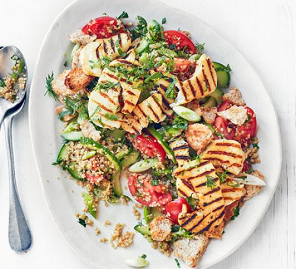

Explore delicious recipes, healthy ideas and more on this page! Go beyond the boring, meal-prepped meals with these easy-to-prep, affordable recipes that are just as delicious as they are healthy. Healthy meals packed with flavour, crunch, punch and zing. Healthy food has never been so easy to prepare!
Tip half of the raspberries and all of the orange juice in a pan. Simmer until the raspberries soften, about 5 mins.
Meanwhile stir the oats, milk and 450ml water in a pan over a low heat until creamy. Top with the raspberry compote, remaining raspberries, orange slices, banana, almond butter, goji berries and chia seeds.
Vegan Lunch
Burrito Bowl with Chipotle Black Beans
Ingredients
125g basmati rice
1 tbsp olive oil
2 garlic cloves, chopped
400g can black beans, drained and rinsed
1 tbsp cider vinegar
1 tsp honey
1 tbsp chipotle paste
100g chopped curly kale
1 avocado, halved and sliced
1 medium tomato, chopped
1 small red onion, chopped
To serve (optional)
chipotle hot sauce
coriander leaves
lime wedges
Method
Cook the rice following pack instructions, then drain and return to the pan to keep warm. In a frying pan, heat the oil, add the garlic and fry for 2 mins or until golden. Add the beans, vinegar, honey and chipotle. Season and warm through for 2 mins.
Boil the kale for 1 min, then drain, squeezing out any excess water. Divide the rice between big shallow bowls and top with the beans, kale, avocado, tomato and onion. Serve with hot sauce, coriander and lime wedges, if you like.
Vegan Dinner
Roasted Cauli-Broc Bowl with Tahini Hummus
Ingredients
400g pack cauliflower & broccoli florets
2 tbsp olive oil
250g ready-to-eat quinoa
2 cooked beetroots, sliced
large handful baby spinach
10 walnuts, toasted and chopped
2 tbsp tahini
3 tbsp hummus
1 lemon, ½ juiced, ½ cut into wedges
Method
The night before, heat oven to 200C/180C fan/gas 6. Put the cauliflower and broccoli in a large roasting tin with the oil and a sprinkle of flaky sea salt. Roast for 25-30 mins until browned and cooked. Leave to cool completely.
Build each bowl by putting half the quinoa in each. Lay the slices of beetroot on top, followed by the spinach, cauliflower, broccoli and walnuts. Combine the tahini, hummus, lemon juice and 1 tbsp water in a small pot. Before eating, coat in the dressing. Serve with the lemon wedges.
Vegeterian Breakfast
Fried Egg Florentine Toastie
Ingredients
2 slices of white bread knob of butter
25g cheddar, grated
small handful baby spinach
1 tbsp olive oil
1 medium egg
sriracha hot sauce, to serve
extra spinach or watercress, to serve
Method
Remove the centre of both slices of bread with the rim of a drinking glass or a cookie cutter. Spread each slice with a little butter and top both with the cheddar and torn spinach leaves – pack as much cheese and spinach on as you can. Heat a large non-stick pan over a medium heat and drizzle in the oil.
Once the pan is hot, sandwich the bread together. Using a fish slice, place in the pan and press down to brown. Cook for 4-5 mins on a medium heat until the cheese begins to melt.
Flip the sandwich over and crack the egg into the hole in the middle. Cover the pan with a lid to cook the egg through for 3-4 mins. Transfer to a plate, drizzle over some sriracha and serve with spinach or watercress on the side.
Vegeterian Lunch
Halloumi & Quinoa Fattoush

Ingredients
2 brown pittas, torn into pieces
5 tbsp olive oil
2 lemons, juiced
1 garlic clove, crushed
250g block halloumi, sliced
250g microwavable pouch quinoa
350g medium tomatoes, quartered
4 spring onions, sliced
½ small bunch mint, chopped
1 medium tomato, chopped
½ small bunch dill, roughly chopped
Method
Heat the grill to high. Toss the pitta pieces with 1 tbsp oil and spread out onto a baking sheet. Grill for 3-4 mins, turning halfway, until golden and crisp. Set aside to cool.
Meanwhile, whisk together the remaining oil with the lemon juice and garlic, then season. Heat a large griddle pan or non-stick frying pan over a high heat and cook the halloumi for 1-2 mins on each side or until lightly charred.
Cook the quinoa following pack instructions, leave to cool, then toss with the tomatoes, cucumber, spring onion, most of the fresh herbs and the dressing. Season to taste. Tip onto a serving plate and top with the halloumi, pitta and remaining herbs.
Vegetrian Dinner
Masala omelette muffins
Ingredients
rapeseed oil, for greasing
2 medium courgettes, coarsely grated
6 large eggs
2 large or 4 small garlic cloves, finely grated
1 red chilli, deseeded and finely chopped
1 tsp chilli powder
1 tsp ground cumin
1 tsp ground coriander
handful fresh coriander, chopped
125g frozen peas
40g feta
Method
Heat oven to 220C/200C fan/ gas 7 and lightly oil four 200ml ramekins.
Grate the courgettes and squeeze really well, removing as much liquid as possible.
Put all the ingredients except the feta in a large jug and mix really well.
Pour into the ramekins, scatter with the feta and bake on a baking sheet for 20-25 mins until risen and set. You can serve the muffins hot or cold with salad, slaw or cooked vegetables.
Breakfast for Meat Lovers
Bacon & Parsley Hotcakes
Ingredients
100g smoked bacon lardons
100g self-raising flour
50g grated mature cheddar cheese
1 tsp fresh thyme leaves, or ½ tsp dried
2 tbsp chopped parsley
2 eggs
6 tbsp milk
Sunflower oil, for frying
Poached eggs and crème fraîche to serve
Method
Dry-fry the lardons until crisp and golden. Tip onto a plate to cool. Mix the flour, cheese, herbs, lardons, salt and pepper in a bowl. Make a well in the centre and drop in the eggs. Beat with a wooden spoon, then gradually add the milk, drawing the flour into the centre as you go. You should end up with a fairly thick batter.
Heat a little oil in a frying pan, drop in large spoonfuls of the batter, then cook until the hotcakes start to set around the edges. Flip them over, then cook until golden. Keep warm while you cook remaining hotcakes.
Serve each person 2 hotcakes topped with a poached egg and a spoonful of crème fraîche, garnishing with extra thyme, if you like.
Lunch for Meat Lovers
Spring Vegetable Broth with Shredded Chicken
Ingredients
1 tbsp olive oil
1 large chicken breast, skin on
500ml chicken stock
1 slice sourdough bread, cut into cubes
2 tbsp grated parmesan
2 large handfuls spring greens, finely sliced
4 asparagus spears, trimmed, halved and cut into chunky pieces
40g fresh or frozen peas
400g can borlotti beans, drained and rinsed
Method
Heat oven to 200C/180C fan/gas 6. Heat 1 tsp of the oil in a pan, brown the chicken, then remove.
Bring the stock to the boil in the same pan, add the chicken and cook for 5 mins. Turn off the heat, cover with a lid and leave to stand for 30 mins.
Put the bread cubes on a baking tray. Drizzle with the remaining oil, some salt and the Parmesan.
Bake for 6 mins until crunchy and golden. Remove and scrape off the tray onto a plate.
Remove the chicken from the pan and slice it. Bring the stock to the boil again and add the greens, asparagus and peas.
Cook for 1 min, then add the beans and chicken. Heat everything through, then pour into bowls and top with the Parmesan toast to serve.
Dinner for Meat Lovers
Thai Green Pork Lettuce Cups
Ingredients
1 tbsp sesame oil
500g pork mince
1 tbsp green curry paste
1 red onion, finely chopped
juice 1 lime
1 tbsp fish sauce
½ small pack mint, leaves only, roughly chopped
½ small pack coriander, leaves only, roughly chopped
4 Little Gem lettuces, leaves separated
rice, to serve (optional)
Method
Heat the oil in a frying pan and cook the pork for 8-10 mins or until cooked through. Stir in the green curry paste and 2 tbsp water, then cook for 1-2 mins.
Remove from the heat and stir in the red onion, lime juice, fish sauce and herbs. Spoon the pork into the lettuce leaves and serve with rice, if you like.